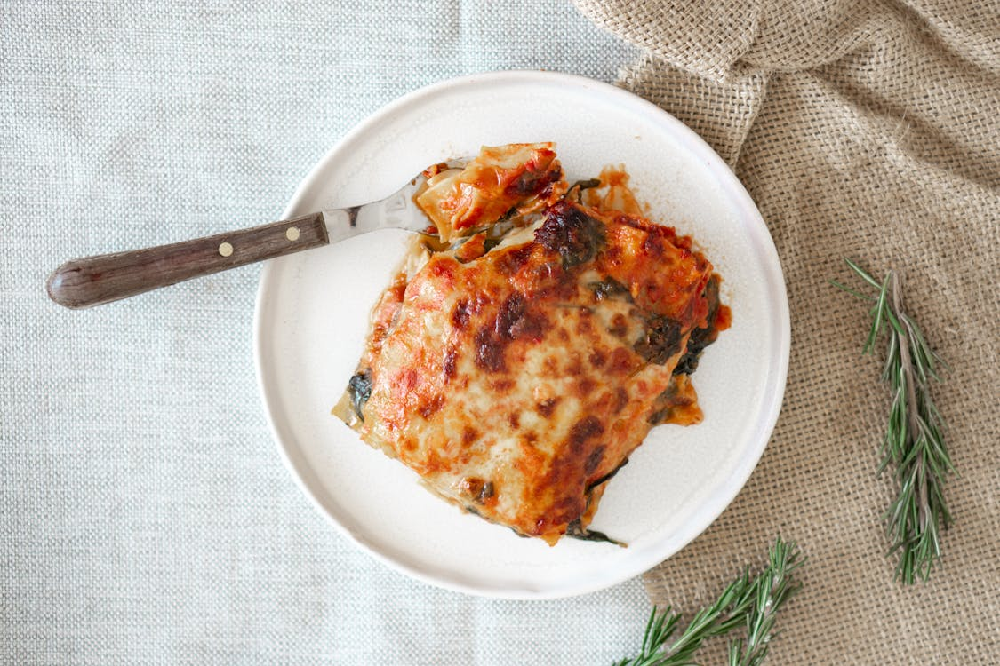

Lasagna
Home
Recipe source

Description
An easy lasagna recipe that saves you lots of time.
Ingredients
- Ground beef
- Spaghetti sauce
- Cheeses (cottage cheese, mozzarella, and Parmesan)
- Eggs
- Seasonings (dried parsley, salt, and black pepper)
- Lasagna noodles
- Water
Steps
- Cook and drain the ground beef
- Stir in the spaghetti sauce and simmer
- Combine the cottage cheese, 2 cups of mozzarella, eggs, half of the Parmesan, and seasonings
- Assemble the lasagna according to the detailed recipe
- Bake, covered, for 45 minutes
- Uncover and continue baking for 10 minutes